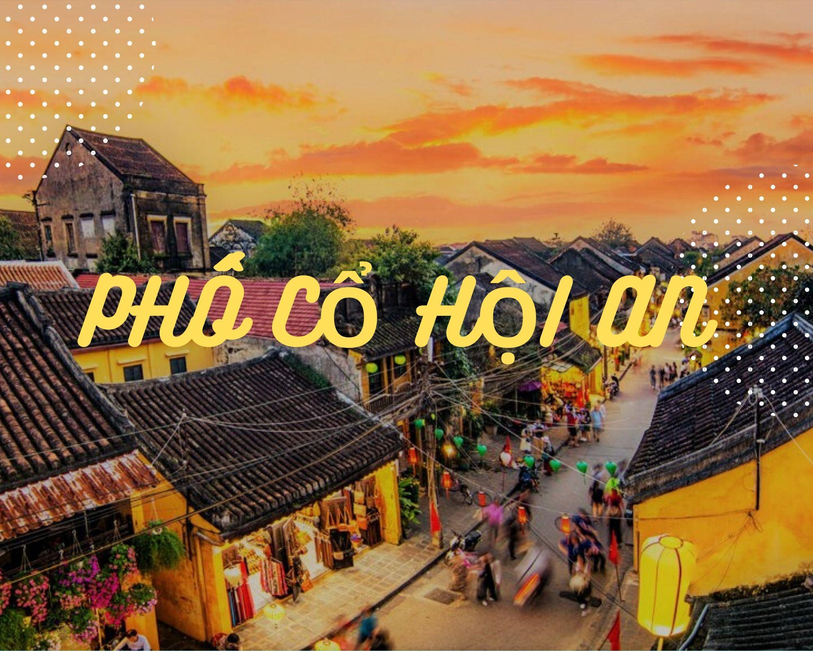
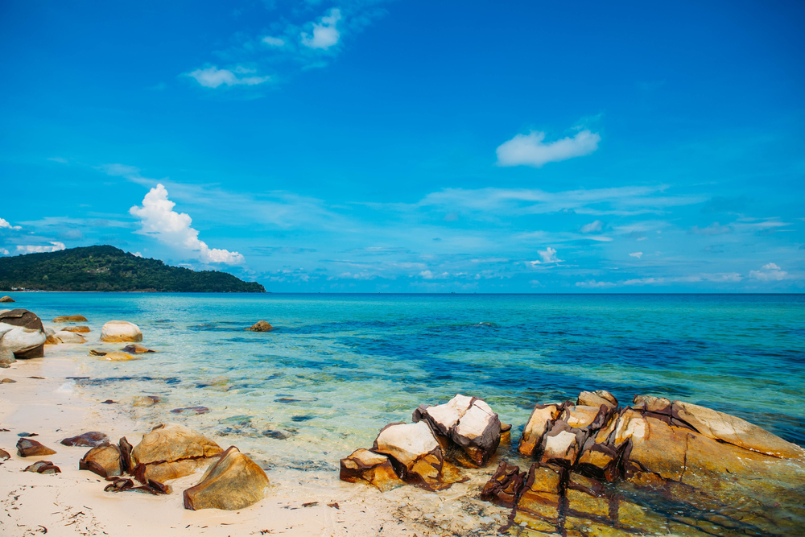
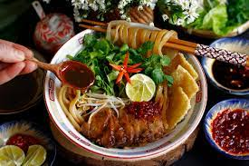
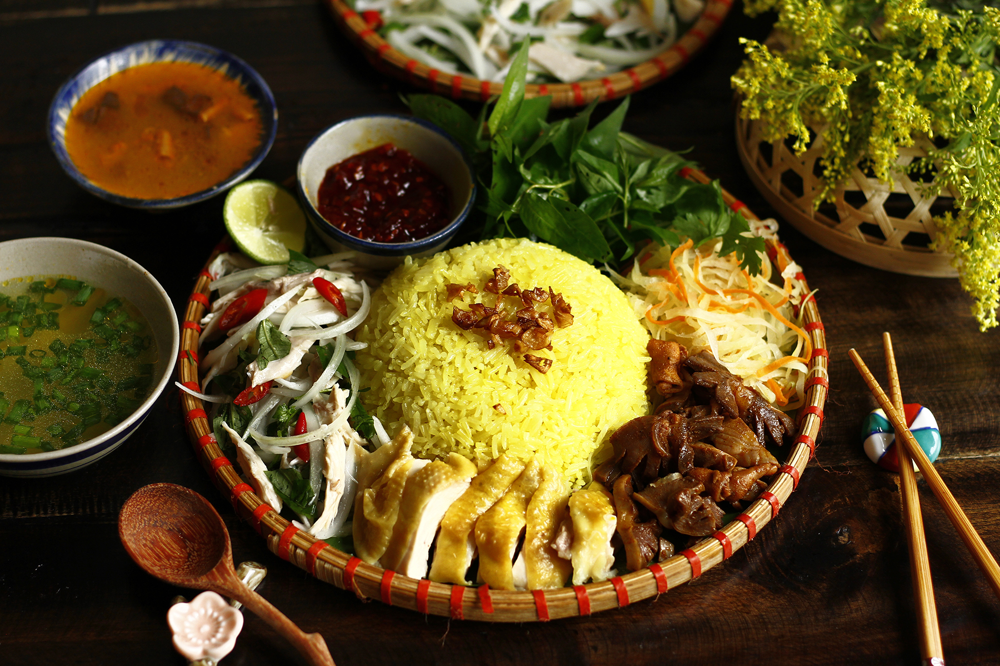
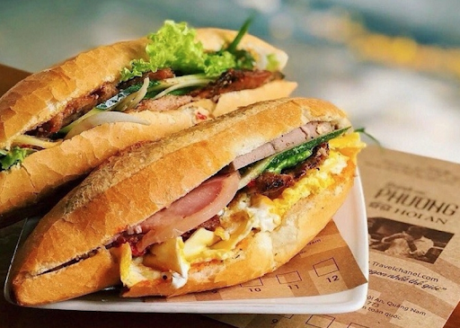

Thông Tin Tour
Giá: 3,200,000 VND
Ngày đi: 30/12/2024
Phương tiện: Máy bay lượt đi + khứ hồi và xe limousine.
Thời gian: 2 ngày 1 đêm
Giới thiệu: Tour khám phá Hội An cổ kính và biển Cửa Đại song song là ẩm thực tại Hội An.
Lịch Trình Tour
- Ngày 1: Di chuyển Đến Hội An, tham quan phố cổ.
- Ngày 2: Tắm biển Cửa Đại, thưởng thức ẩm thực, và trở về.
Điểm Tham Quan Nổi Bật
-  Phố cổ Hội An: Với những con đường đèn lồng lung linh.
-  Biển Cửa Đại: Với bãi cát trắng mịn.
Ẩm Thực Đặc Sắc
Tour sẽ giới thiệu đến du khách các món ăn nổi tiếng của Hội An:
-  Cao lầu: Đây được xem là món ăn đặc sản của thành phố Hội An.
-  Cơm gà Hội An: Món đặc sản của Quảng Nam, nổi tiếng bởi hương vị đậm đà, thịt gà săn chắc, hạt cơm dẻo thơm, ăn cùng chút nộm chua ngọt.
-  Bánh mì Phượng: Được biết đến là một thương hiệu không chỉ nổi tiếng ở Hội An (Quảng Nam) mà còn được du khách trong và ngoài nước biết tới.
Phương Tiện Di Chuyển
Du khách có thể lựa chọn:
- Máy bay lượt đi + khứ hồi đầy đủ tiện nghi.
- Xe limousine sang trọng, thoải mái.